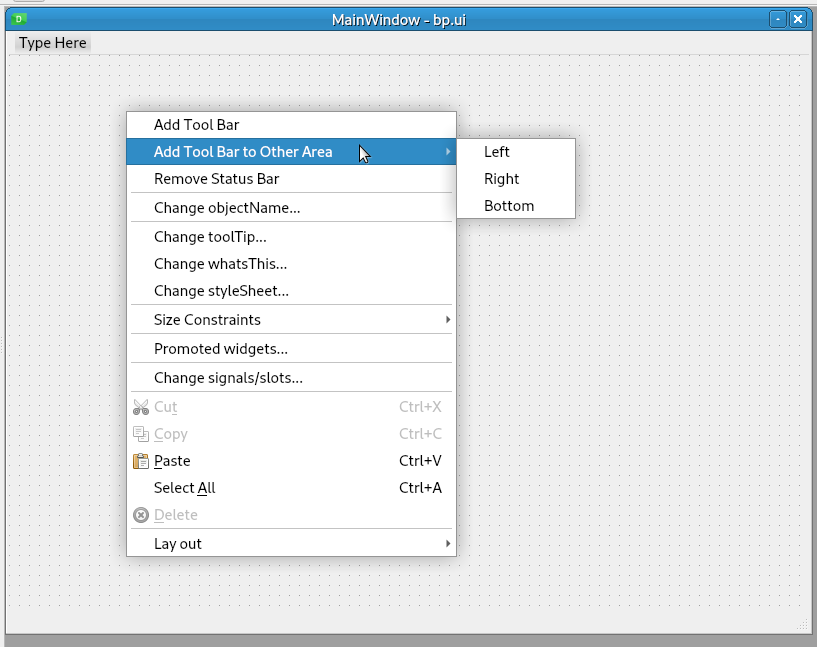
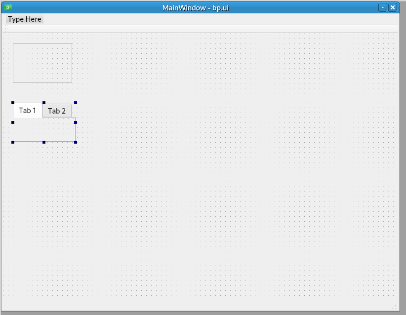
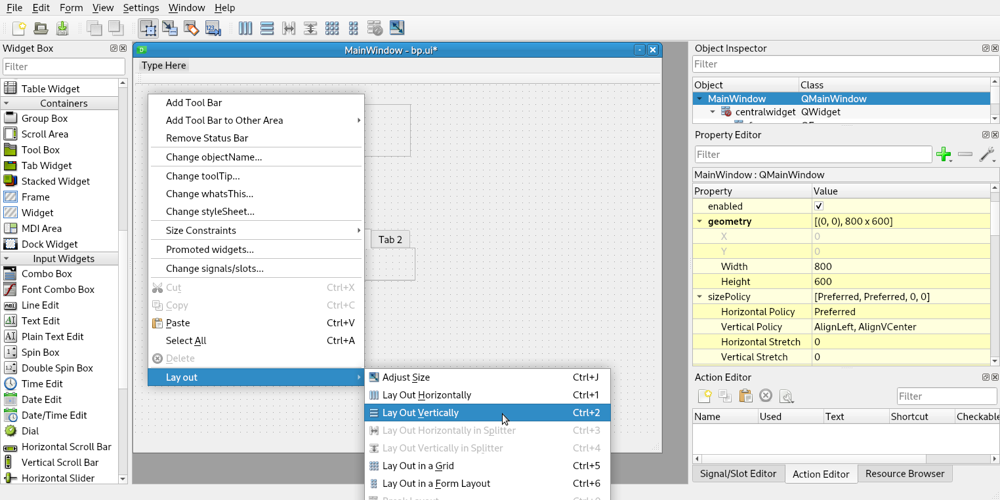
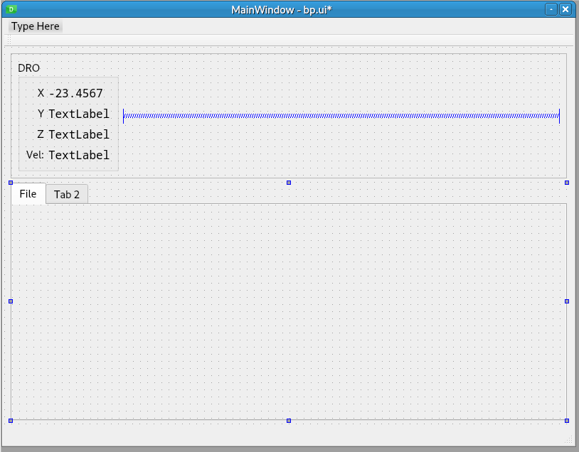
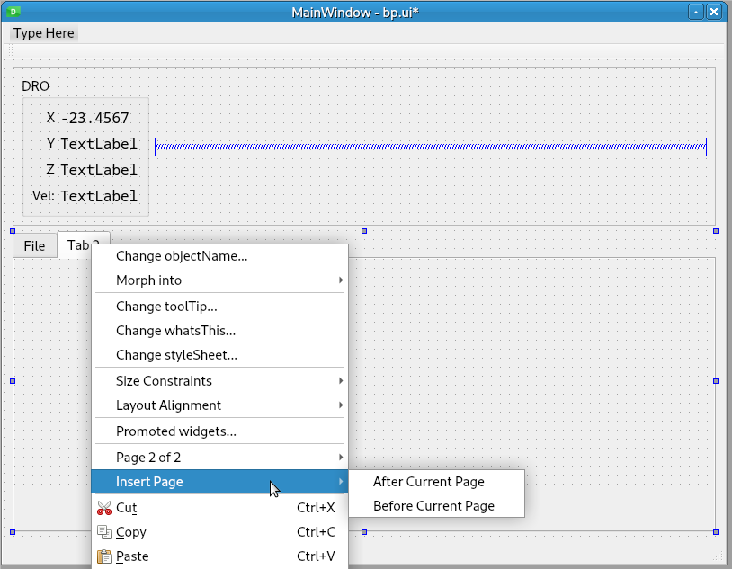
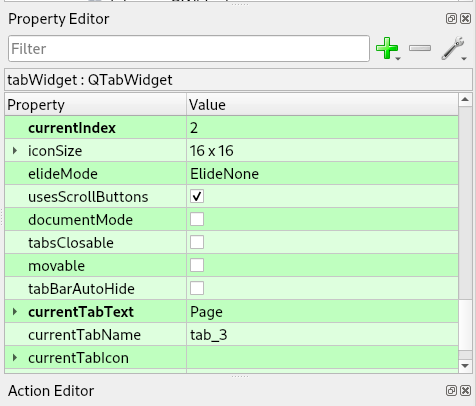

Master Layout¶
Starting with an empty Main Window, if you right-click in it you can add a tool bar or remove the status bar
Next, if you have some items you want visible all the time you can add a QFrame or QWidget then below that, add a QTabWidget
Now that you have at least one widget in the main window, you can right-click and select the layout you want to use
Example layout:
To add more tabs to a tab widget, right click on the tab then select Insert Page and where you want it to be inserted
To change the tab name, in the Property Editor QTabWidget section, change the currenTabText value to the new desired name.
